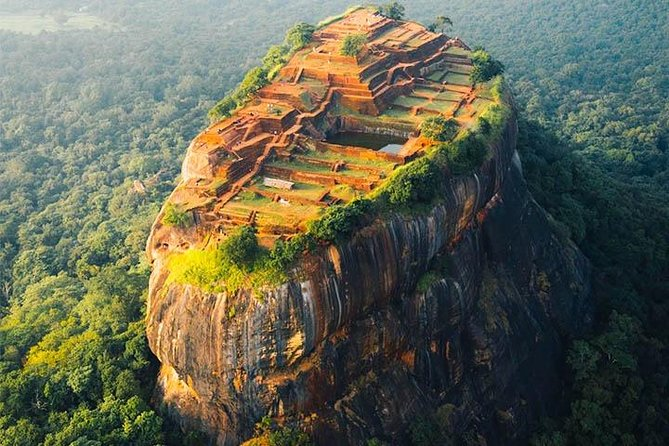
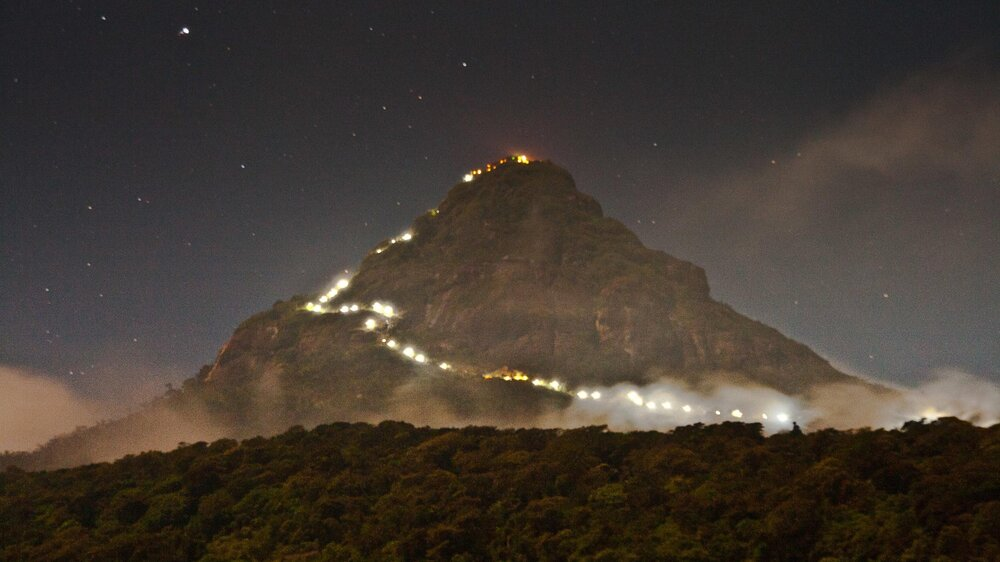

The Beauty of Sri Lanka
Sri Lanka and Sri Lankans may be facing a lot of hard economic issues but I bet you travelling to this country in Asia is a definite mind opener,
theres lot to see and enjoy especially in the downsouth of the country but overall if you go up, down left or right
Sri Lanka is detemined to offer you an eye opeing experience if your a traveller sitting in a
cubicle for the most of your day or you just live around buildings and technology with no gushing
waterfalls and streams to take your mind off of the world; and actually see the world.
The world has a lot to offer to get your mind out of the work blues and this island located just
below the tip of south india has just the right ingredients a traveller needs; sandy shores,
beautiful beaches hidden inside the countries edges, looking for an adventure? hike on the mountains of
Kandy, most of these mountains now offer easy road for people to travel up,
And I bet you the view is nice
a. Of the City
b. The buildings on top of mountains and the mountains themselves.
c. The aroma of nature with its natural, glorious and splendid transformation of the day in to night.
Mixed them all up and I cant define to you the view, A Sunset never seen before. Your eyes will capture this image and cherish them forever.
Other than famous location in the country such as Kandy, Galle, Trincomalee, Colombo and Jaffna. There are more other sites to visit in Sri Lanka. The famous rock in Sri Lanka is a tavellers must go to site, this place is jsut a mere 100% example of how people would have lived in the early ages. Before the dawn of the industrial civilization especially for a country like Sri Lanka in the advent of the arrival of the Portuguese, Dutch and the English; the Sigiriya rock is a castle and a fortress of the early AD's. In this ancient marvel there is no pipe line systems for transporting water up to the fountains and pools, but this ancient rock has been designed with hydraulic power that pushes the water through gravitational force sourced from nearby Sigiriya Tank
Have you decided maybe you miss home, you need to feel the luxuries of modernization, the thrill of technology and going up tall towers.
Come Colombo.
The commercial capital Colombo, is set to cater to your western needs, located in the western province
you might encounter westernization with a twist of local varieties. For instance you can have your food delivered staright to you doorstep with the
flocking number of Uber Eats rider only found in Colombo due to the high number of local and international restaurants.
Want to go for a run with the sunset and the beach?, take your stroll onto the Galle Face green and enjoy local snacks with an
impeccable sunset.
Dine in for dinner at an adjacent five star hotel in Colombo including
the Taj Samudra, Shranghi La, The Kingsbury, Galadari and The Galle Face Hotel. If you have to go shopping afterwards you can visit the largest local and
international shopping mall in Srilanka at the OneGalleFace Mall, catering to over 300+ retailers, 50+ food and beverage options and a distinguish
rooftop view and dining. Sri Lanka is a diversed nation mixed with an international vibrancy and twist for all tast buds,
looking for a local market that is not robbing off of your wallet or making you swipe your credit card too many times?
Fort (Pettah), where you can find all your local products in one place. Wether you need to buy your souvenir for your family or looking for
vegetables, need some paint, lights or sweets, Pettah is a mix of shops offering a whole lot of goods and items people can buy and bargain,
travelling with a local guide would help a lot because finding your way in and out of this place can be a bit of a daunting task. The fort city is a hub for buyers and sellers from all industry producing wholesale and retails products.
A noticeable site amongst the crowd of commuters is the vibrant red mosque.
 Similarly, there are many other cultural and heritagous sites you could visit in Sri Lanka that would help you reflect your mind and ponder of the differences and socieies of the world
and help you understand in fostering the importance of travelling and visiting such places.
One such site that brings all Sri Lankans together is climbing up a mountain, the Adams Peak
Similarly, there are many other cultural and heritagous sites you could visit in Sri Lanka that would help you reflect your mind and ponder of the differences and socieies of the world
and help you understand in fostering the importance of travelling and visiting such places.
One such site that brings all Sri Lankans together is climbing up a mountain, the Adams Peak
This site has ancient beleifs that a lot of people have clinged to, all relegions in Sri Lanka have
subline with their beleifs to the footprint located at the pinnacle of the peak. Climbing this mountain has a beatiful view of Hatton. The best time to climb the mountain is in the start of the year between January to April and it can be very crowded.
But if you start your trip late at night you would be just close to reaching the top at the crack of dawn which can give you another take away picture for your portrait.

Sri Lanka has one of the worlds most beautiful sites and places to visit that would provide an enhancing and cosyness to travellers from aorund the world ready to
engage with the country scenic destinatation and engagive culture. If your planning to travel to Sri Lanka and visit all the top notch sites the country has to offer
visit one of my affiliate links where i provide an indepth explanation to favorite tourist sites in Sri Lanka and other places not yet seen.